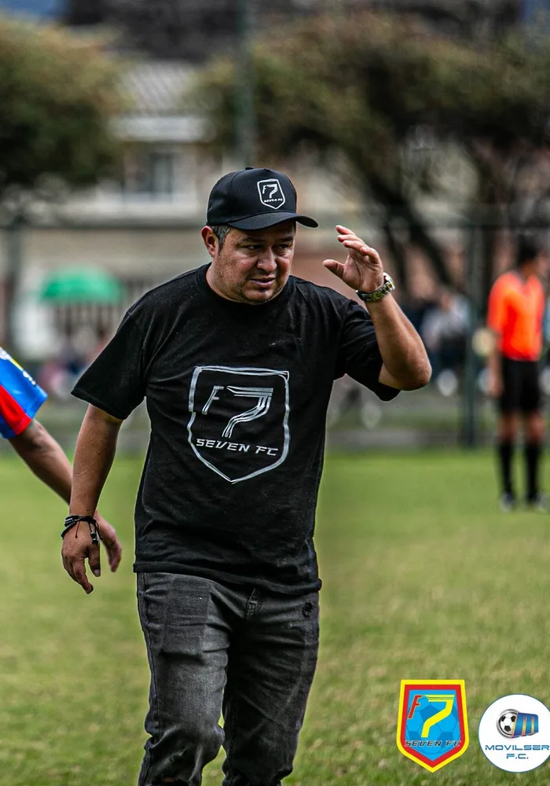

President · Seven ColombiaJohn Cárdenas
Sports graduate from the Universidad Pedagógica Nacional and former professional player for Independiente Santa Fe. He has led youth talent development programs since 2010 and chairs the Foundation's Board of Directors.
@john.cardenas.984